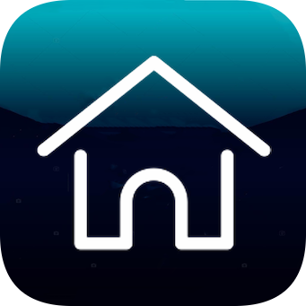

templatePalace

1024回家Web版，添加到主屏幕后使用，否则不能使用。有问题请联系
Gmail邮箱：1024huijia@gmail.com
Twitter推特：
https://twitter.com/1024huijia?s=21
Tg群组：
https://t.me/+6Ycya_xTgsA2NGNl
Github：
https://github.com/1024huijia/GoHome